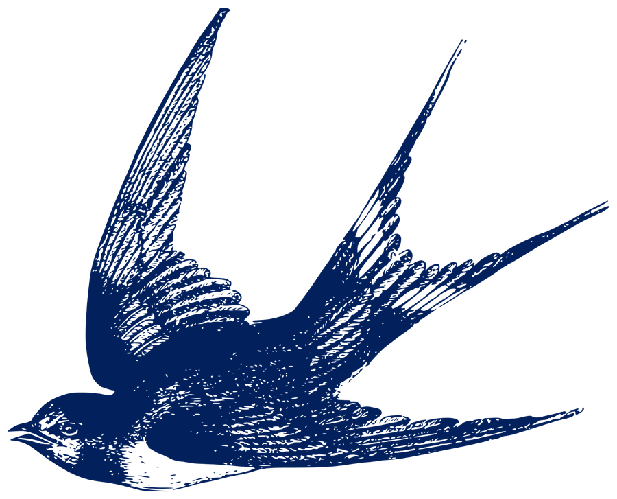
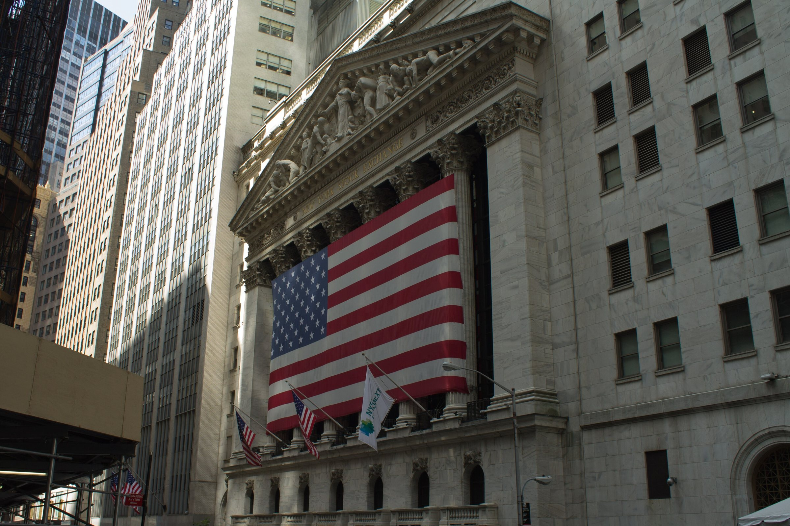
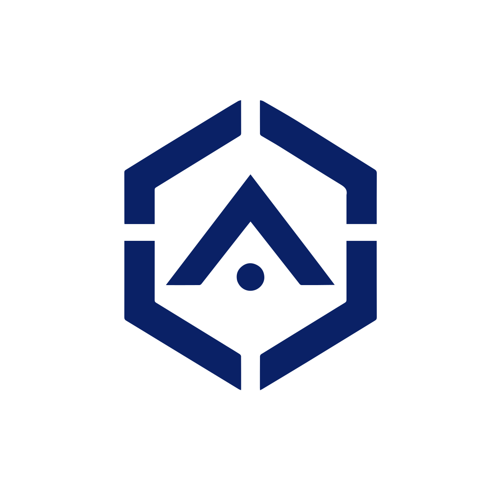
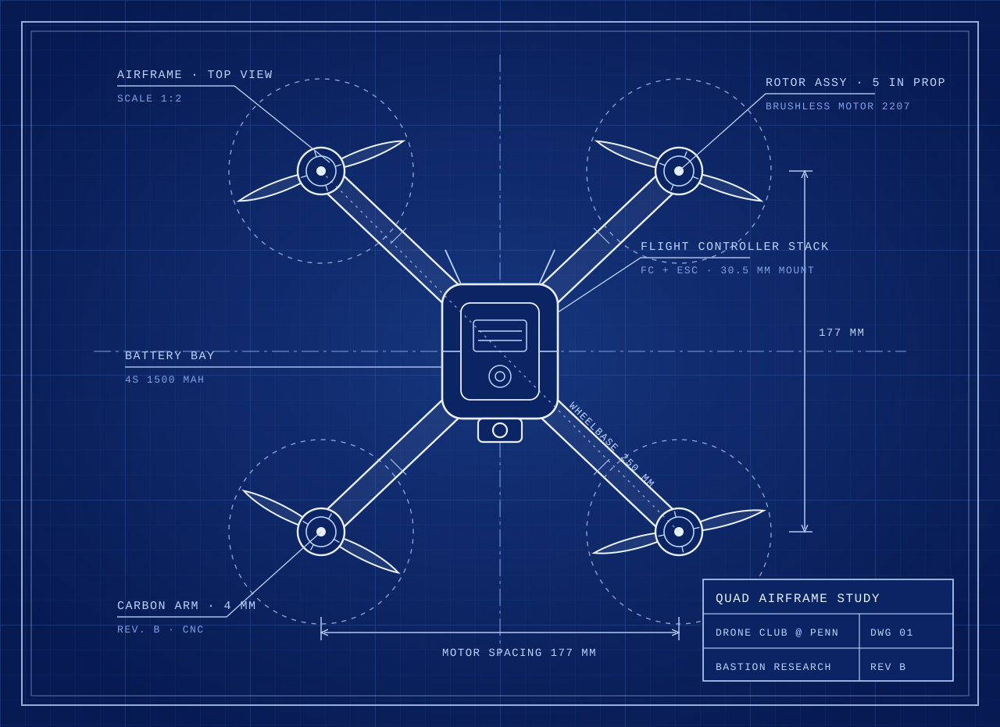
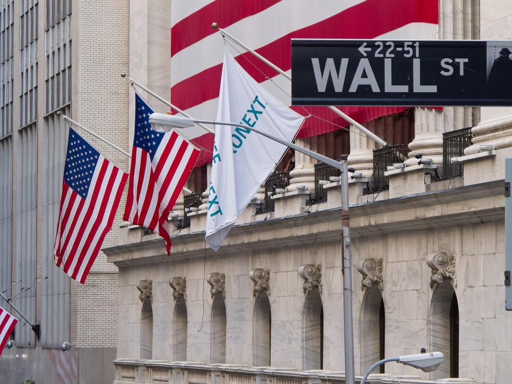
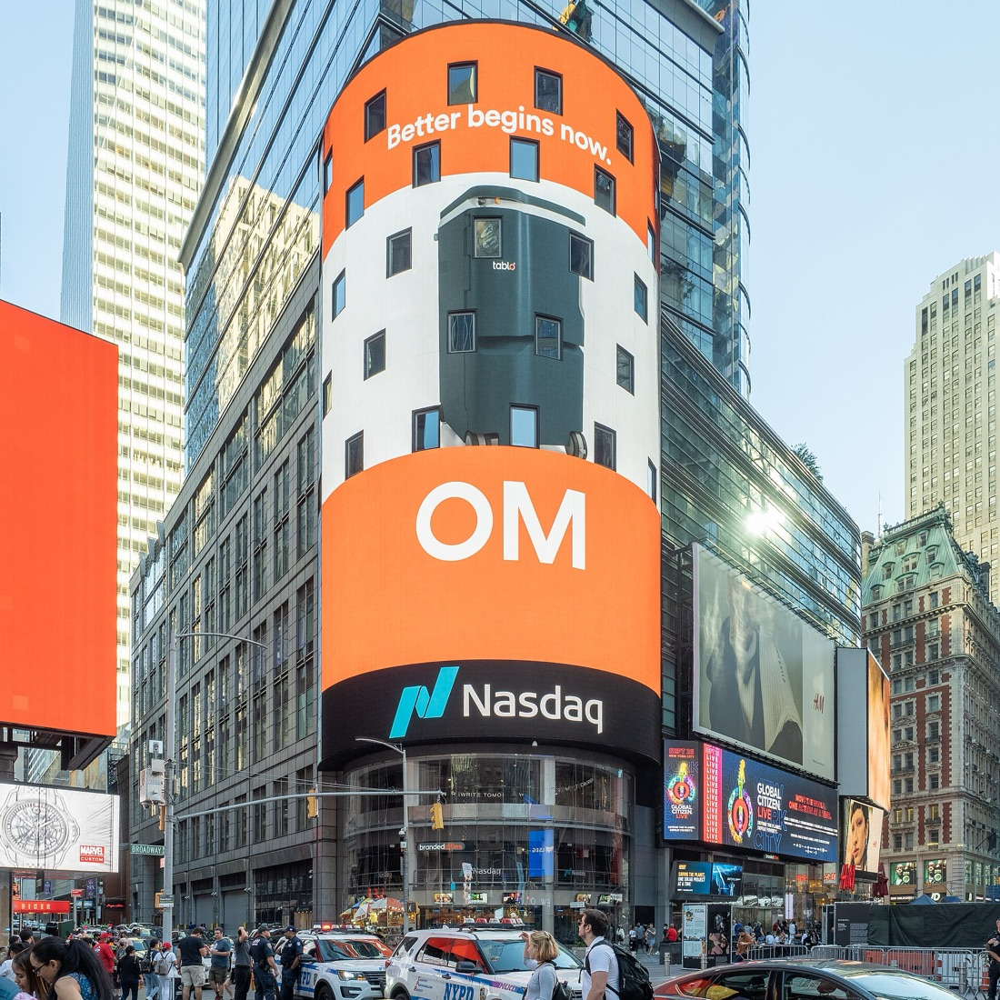

Credit & Convertibles
Researching corporate credit and convertible securities across the capital structure.
Explore Credit & Convertibles
BASTIONInvestment Society Client Login
Bastion analysts use artificial intelligence and alternative data to find undiscovered market opportunities.
We bring together extraordinary undergraduates, equip them with mentors and resources, so that we can produce institutional-grade artificial intelligence investment philosophy research.

ARGOS ATLASThe Bastion Investment Society teaches members in all four strategy groups to use artificial intelligence to find trends in alternative data.
We teach analysts to build machine learning software that finds trends in more than 20,000 ships at sea, and to see how daily port arrivals, departures, and congestion affect stock prices. We also teach them to track roughly 14,000 active aircraft to understand company inventories and whether a company's aviation operations are accelerating or decelerating.
We build monitoring systems that put more than 200,000 active cameras to work, giving analysts earlier notice of geolocated conflicts, wars, and natural disasters. We track foot traffic and water levels at critical energy infrastructure, and we learn to extract and analyze data on more than 35,000 global power facilities (nuclear, solar, wind, hydro, and gas), plus more than 4,000 data centers, telecommunications hubs, and undersea fiber-optic cable routes.
Our four strategy groups are taught to turn terabytes of data into early insights and investment actions.

The Bastion Investment Society collaborates with Drone Club @ Penn to understand the drone industry from the airframe up.
We learned from them how to design airframes and components in CAD, build functional prototypes, and research how drones are used in industries like agriculture, delivery, inspection, and defense.
That hands-on knowledge helps us make stronger investment decisions, together with partner members like Jonah Begley.
Researching corporate credit and convertible securities across the capital structure.
Explore Credit & ConvertiblesFundamental equity research, built on alternative data and artificial intelligence.
Explore Equities
Systematic, data-driven research across global markets.
Explore Quantitative Strategies
Sourcing and evaluating early-stage private companies and the founders building them.
Explore Venture Capital